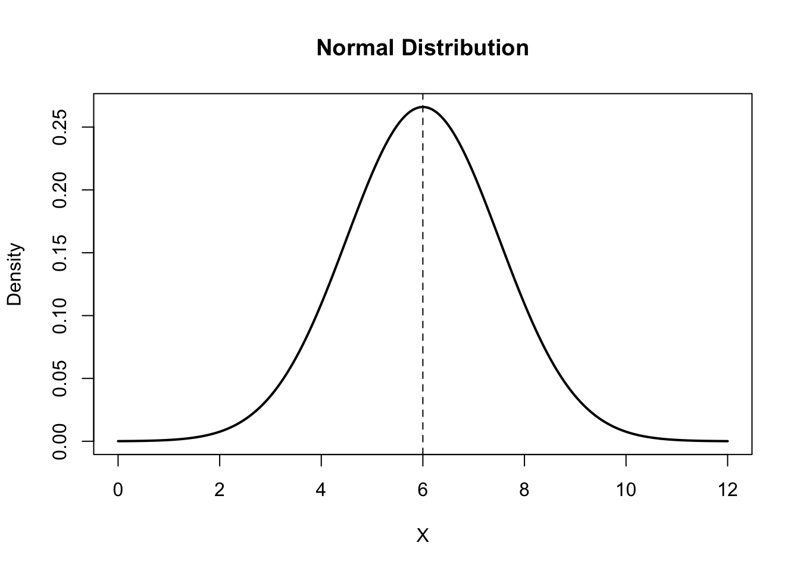
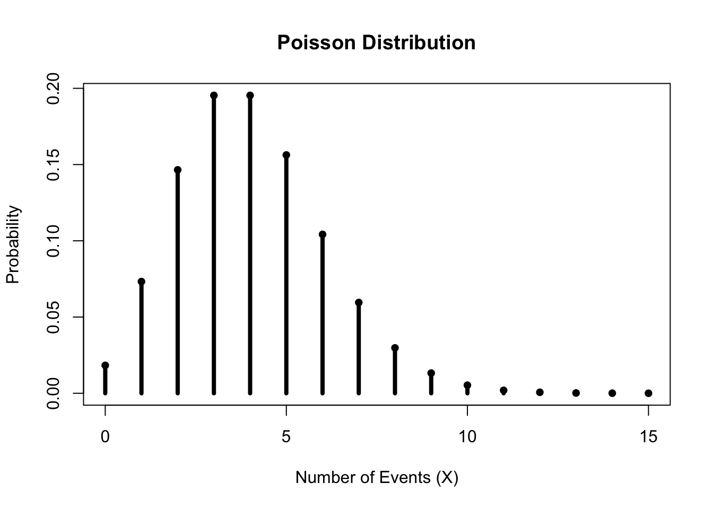
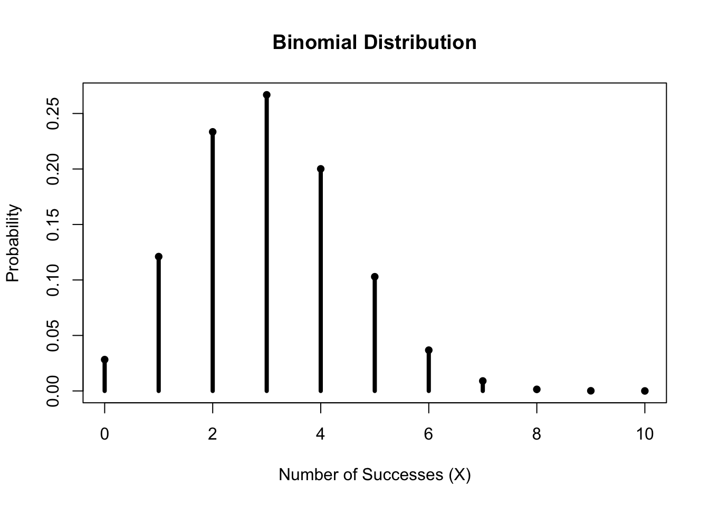

4 Probability Rules and Distributions
4.1 Overview
This section marks the transition from describing observed data to reasoning about uncertain outcomes. In earlier sections, the focus was on concepts such as center, spread, shape, and trends. Now we extend that framework by asking:
What could happen, and how likely is each outcome?
Answering this requires more than descriptive statistics. It requires looking at probabilities and probability distributions.
For example, suppose a call center receives an average of 12 calls per hour. Knowing the average is useful, but it doesn’t necessarily answer a question such as:
What is the probability that the call center receives 20 or more calls in the next hour?*The actual number of calls is uncertain. It could be 8 calls, 12 calls, 15 calls, 20 calls, and so on. A probability answers a specific question about this value. A probability distribution describes how probability is distributed across the different possible values.
Different types of random processes produce different patterns of possible outcomes. This leads to different probability distributions, including:
- Binomial
- Normal
- Poisson
- Exponential
The key task is therefore not simply calculating a probability, but first determining which probability distribution appropriately models the situation.
4.2 Probability Terminology
- Probability
- A single number between 0 and 1 describing how likely a particular event is.
- Probability Distribution
- A model that describes the possible values of a random variable and their probabilities.
- Experiment
- A process that produces an uncertain outcome (random process).
- Outcome
- A single possible result of an experiment.
- Event
- A set of one or more outcomes from the sample space.
- Sample Space
- The set of all possible outcomes of an experiment, typically denoted by \(S\).
- Complement
- The event that \(A\) does not occur, denoted \(A^c\).
- Conditional Probability
- The probability that event \(A\) occurs given that event \(B\) has already occurred, denoted \(P(A \mid B)\).
- Random Variable
- A numerical variable whose value is determined by the outcome of a random process (experiment).
Note: random does not mean that all possible outcomes are equally likely. It simply means that the outcome is unknown in advance.
When determining probabilties involving multiple events or variables, there are two questions to consider:
Can A and B happen together?
Events being mutually exclusive means they cannot happen together. If one event occurs, it is not possible for another to occur. Suppose a customer’s response to an email is classified as “click” or “ignore”. It’s physically impossible for the customer to both click the email and ignore it.
Events that are indepdendent mean the outcome of one event has no effect on another. For example, say the outcome of Customer A clicking or ignoring the email has no effect on whether Customer B clicks. Knowing Customer A clicked doesn’t change the probability of Customer B clicking.
Independence and mutually exclusivity are two separate dimensions; the only contradiction is “independent and mutually exclusive”. While other combinations are possible, events cannot be both independent and mutually exclusive because the occurrence of one makes the probability of the other 0, so the events are necessarily dependent.
4.3 Probability Rules
4.3.1 Complement Rule
The complement of event \(A\), denoted \(A^c\), is the event that \(A\) does not occur.
\(P(A^c) = 1 - P(A)\)
4.3.2 Addition Rule
The addition rule calculates the probability that event \(A\) or event \(B\) occurs.
For any two events:
\[ P(A \cup B) = P(A) + P(B) - P(A \cap B) \]
If \(A\) and \(B\) are mutually exclusive, they cannot occur together, so \(P(A \cap B)=0\):
\[ P(A \cup B) = P(A) + P(B) \]
4.3.3 Multiplication Rule
For independent events, the probability that event \(A\) and event \(B\) both occur is:
\[ P(A \cap B) = P(A)P(B) \]
4.3.4 Conditional Probability
Conditional probability is the probability that event \(A\) occurs given that event \(B\) has already occurred.
\[ P(A \mid B) = \frac{P(A \cap B)}{P(B)} \]
4.4 Distributions
A probability distribution is a model describing the possible values of a random variable and how likely those values are.
4.4.1 Binomial Distribution
A binomial distribution models the number of successes in a fixed or known number of independent trials. Each trial has only two possible outcomes, classified as success or failure, with a constant probability of success, \(p\). Trials are independent, meaning the outcome of one trial does not change the probability of success on another. The random variable \(X\) is discrete and represents the total number of successes across the \(n\) trials.
\[ X \sim \text{Binomial}(n,p) \]
Where…
\(n\) = number of trials
\(p\) = probability of success on each trial
\(X\) = number of successes
Example: A retailer sends a promotion to 1,000 customers. Each customer has an 8% probability of clicking.
\(X \sim \text{Binomial}(1000, 0.08)\)
Here, a trial is sending the promotion to one customer, a success is a click, \(n = 1000\), \(p = 0.08\), and \(X\) is the number of customers who click.
A binomial distribution is discrete, so it consists of separate probabilities for each possible number of successes. Each bar represents \(P(X=x)\), the probability of observing exactly \(x\) successes.
4.4.2 Normal Distribution
A normal distribution models continuous numerical values that follow a symmetric, bell-shaped distribution centered around a mean, \(\mu\). The standard deviation, \(\sigma\), determines how spread out the values are around the mean. Because the distribution is symmetric, the mean, median, and mode are equal. The random variable \(X\) is continuous and represents the numerical value being measured.
\[ X \sim N(\mu, \sigma^2) \]
Where…
\(\mu\) = population mean (center)
\(\sigma\) = population standard deviation (spread)
\(\sigma^2\) = population variance
\(X\) = value of the continuous random variable
Example: Call durations have a mean of 6 minutes and a standard deviation of 1.5 minutes.
\(X \sim N(6, 1.5^2)\)
Here, \(X\) is the duration of a call in minutes, \(\mu = 6\) is the average call duration, and \(\sigma = 1.5\) is the standard deviation of call durations.

A normal distribution is continuous, so it is represented by a smooth curve rather than separate probabilities. The curve is symmetric and bell-shaped, centered at the mean, \(\mu\), while the standard deviation, \(\sigma\), determines its spread. Approximately 68% of values fall within \(\mu \pm 1\sigma\), 95% within \(\mu \pm 2\sigma\), and 99.7% within \(\mu \pm 3\sigma\).
4.4.3 Poisson Distribution
A Poisson distribution models the number of events that occur within a fixed interval of time or space. Events are assumed to occur independently and at a constant average rate, \(\lambda\). The random variable \(X\) is discrete and represents the total number of events that occur within the interval.
\[ X \sim \text{Poisson}(\lambda) \]
Where…
\(\lambda\) = expected number of events per interval
\(X\) = number of events that occur in the interval
Example: A call center receives an average of 12 calls per hour.
\(X \sim \text{Poisson}(12)\)
Here, the interval is one hour, \(\lambda = 12\) is the expected number of calls per hour, and \(X\) is the number of calls received during one hour.

A Poisson distribution is discrete, so it consists of separate probabilities for each possible number of events. Each bar represents \(P(X=x)\), the probability of observing exactly \(x\) events within the interval. The shape of the distribution depends on the average event rate, \(\lambda\).
4.4.4 Exponential Distribution
An exponential distribution models the waiting time between events in a Poisson process. Events are assumed to occur independently and at a constant average rate, \(\lambda\). The random variable \(T\) is continuous and represents the time until the next event or the time between consecutive events.
\[ T \sim \text{Exponential}(\lambda) \]
Where…
\(\lambda\) = average rate at which events occur
\(T\) = waiting time until or between events
Example: Customers arrive at an average rate of 6 customers per hour.
\(T \sim \text{Exponential}(6)\)
Here, \(\lambda = 6\) is the average arrival rate per hour, and \(T\) is the waiting time in hours until the next customer arrives. The expected waiting time is \(E[T] = 1/\lambda = 1/6\) hour, or 10 minutes.

An exponential distribution is continuous and right-skewed, so it is represented by a smooth, decreasing curve. Short waiting times have the highest density, while increasingly long waiting times become less likely. The distribution is memoryless, meaning how long you have already waited does not change the distribution of how much longer you will wait.
Poisson and Exponential model two different aspects of the same event process:
- Poisson → How many events occur during an interval?
- Exponential → How long between events?
For example, if customers arrive at a constant average rate:
- Number of customers arriving per hour → Poisson
- Time until the next customer arrives → Exponential
- Q–Q Plot
- A graphical method for checking whether data are approximately normally distributed. If the points roughly follow the reference line, a Normal model may be reasonable. Systematic deviations from the line suggest the data are not Normal.